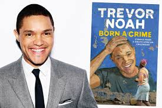

In the chapter on Tradition, we find that it involves two couples who were
Abel and Patricia. It all started when Trevor’s mother used to take her Volkswagen
to be repaired in Abels garage. We see that Abel was a hardworking man to earn
a living and also Patricia was an independent woman and when she met Abel,
she thought she has got.The man she can leave with and make their feuter look bright.
But all over sadden, Patricia was not a traditional woman so she didn’t know things
to do with tradition. When they went to visit Abels mother, the tradition was applied
there and it was to bow whenever any male gender was passing. And Trevor’s mother was
doing it extraordinarily. When they got married, there were no celebrations,
exchanging of rings and they only signed papers to make that they have been married.
If we link it to the current world, we find that, in most of the tribes,
tradition is not valued that much, and couples are married in the church where
they exchange vows, rings, and sign up the certificate that mark they are married.
And also when we look at which Abel was behaving after drinking alcohol,
which he used to beat Patricia and do all creasy things and when Patricia went to
the police to report him, there was no action taken but in the real world now when
that is noted, action will be taken and it portrays domestic violence.
Trevor used humor in the first part
where he describes the churches and he says that
the Black church was for the Africans and the reason why they
took long in the church, "they were sinners so they needed too much
time with Jesus".(06) Trevor also uses humor in the part where his mother
took a few days and while coming back he describes his brother "I only vaguely
remembers my mom being gone for a few days,
and when she got back there was now,
this thing in the house that cried and shat and got fed."(250)
Trevor used it to describe how his brothers’ work was just to cry,
to be fed, to shat up and he could not do anything.Humor is portrayed in the
fourth chapter where Trevoh escapes beatings from his
grandmother.After he has accidentally perforated his cousin’s eardrums,
And his grandmother describes him as the naughtiest boy she had ever met
In her life. That’s where his grandmother says she doesn’t know how to bit.A white child that will turn
“blue and green and yellow and red”.She explains how the skin color of Trevoh will be after he has been bitten
And that’s where the humor originally came in (52).
Trevor finding humor in the darkest of times, where he didn’t dream of getting
an indoor toilet and a job as a host. His mother was saying that ,
she does not care she wants a white man
And his dad was like well, you know how this Swiss love chocolate.
due to his color, when they could out for a ride with his parents,
he could run after his father but when his father saw people in the streets,
he could run and leave him behind, but when Trevor saw that,
he thought that the game was continuing so he kept on running after him
and he could shout loud “dad”
But that could make his father run faster.
Humor also comes out as Trevor got older, he turned to stand up mining
his life experience for laughs. They laughed at everything. Case in point.
Even the very painful ones. His mother was short and she was shot twice,
once in the ass and the other on the head. When Trevor was crying and his mother
was telling him not to cry because of her nose,
you’re officially the best-looking person in the family.
Trevor looked up to her mother as a role model, yet his mother
didn't have a role model to herself.By writting "Born a Crime", Trevor
becomes a role model for many people.